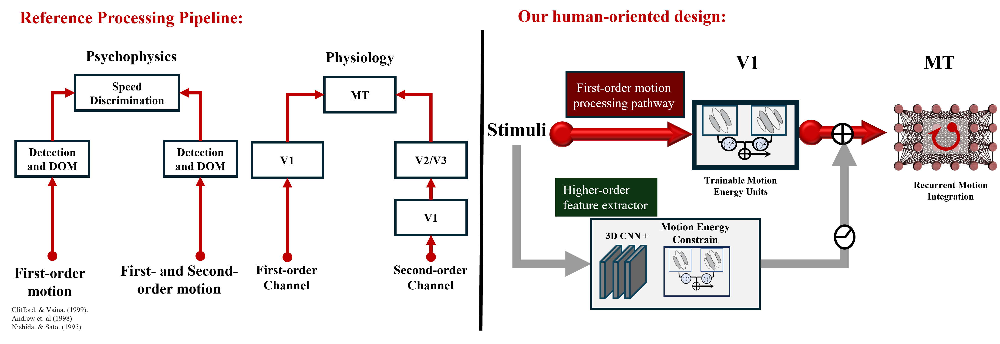

Visual motion perception and estimation are vital for both living beings and AI agents to navigate and interact with the dynamic world.
These abilities support key tasks such as navigation, tracking, prediction, and pursuit.
Recent advances in deep learning have pushed machine vision capabilities to rival or even surpass human performance in many visual tasks, including visual motion estimation.
While state-of-the-art (SOTA) models achieve remarkable accuracy in calculating ground-truth optical flow, they lack alignment with human motion perception.
Structurally, human motion perception involves complex spatiotemporal dynamics, whereas current CV models primarily focus on frame-to-frame correspondence.
This design prioritization often ignores neurophysiological plausibility. Perceptually, CV models struggle to replicate human motion perception,
failing under experimental variations, misinterpreting visual illusions, and overlooking inherent human biases.
The right examples illustrate motion integration with depth cues and the Mario reverse-phi illusion, results generated from RAFT-sintel.
Among the many gaps between CV models and human perception, second-order motion processing stands out as a significant challenge.
Humans perceive these two stimuli as having similar speeds and directions despite their differences in frequency space.
Fourier analysis reveals that first-order motion exhibits asymmetric energy in the Fourier domain,
whereas second-order motion lacks detectable energy, making it invisible to classical analysis. Mechanistically,
humans employ distinct processing channels for second-order motion, but CV models fail to account for this.
As a result, CV models struggle with such motion, producing noise-like responses due to their reliance on pixel correspondence and brightness consistency—features that second-order motion often lacks.
Abstract
The objective of this study is to develop machines that naturally learn to perceive visual motion as humans do.
While recent advances in computer vision (CV) have enabled DNN-based models to accurately estimate optical flow in naturalistic images,
a significant disparity remains between CV models and the biological visual system in both architecture and behavior.
This disparity includes humans' ability to perceive the motion of higher-order image features (second-order motion),
which many CV models fail to capture due to their reliance on the intensity conservation law.
Our model architecture mimics the cortical V1-MT motion processing pathway, utilizing a trainable motion energy sensor bank and a recurrent self-attention network.
Supervised learning on diverse naturalistic movies allows the model to replicate psychophysical and physiological findings about first-order (luminance-based) motion perception.
For second-order motion, inspired by neuroscientific findings, the model includes an additional sensing pathway with nonlinear preprocessing before motion energy sensing,
implemented using a simple multi-layer 3D CNN block.
To explore how the brain naturally acquires second-order motion perception in natural environments---where pure second-order signals are rare---we hypothesized
that second-order mechanisms are critical for estimating robust object motion amidst optical fluctuations, such as highlights on glossy surfaces.
We trained our dual-pathway model on novel motion datasets with varying material properties of moving objects and found that
training to estimate motion for non-Lambertian materials naturally endowed the model with the ability to perceive second-order motion,
akin to humans. The resulting model effectively aligns with biological systems while generalizing to both first- and second-order motion phenomena in natural scenes.
Two-Stages-Dual-Channel Model Design
Our prototype model employs a two-stage motion processing architecture, combining classical motion energy (ME) sensors in Stage I with deep neural networks (DNNs) in Stage II.
Stage I captures local motion energy, mimicking the function of the V1 area, while Stage II handles global motion integration and segregation, simulating the MT area.
The red route in the figure represents classical first-order motion processing.
Specifically, we implemented 256 trainable ME units using quadrature 2D Gabor spatial filters and temporal filters to capture spatiotemporal motion energies within a multi-scale wavelet space.
This channel is specialized for first-order motion.
To process higher-order motion, we introduced an alternative pathway, depicted by the gray route, which employs multi-layer 3D CNNs before motion energy computation.
This design draws inspiration from human vision research, which suggests distinct mechanisms for first- and second-order motion processing.

The second stage, which mimics the middle temporal cortex (MT), addresses motion integration and segregation.
We introduce a graph network to construct a motion graph of a dynamic scene, enabling flexible connections between local motion elements and recurrent global motion integration.
Efficient motion integration aside, the motion graph implicitly encodes object interconnections in a graph topology.
Training-free graph cuts can be seamlessly applied for object-level segmentation. See below for The demo of the inferred motion flow field and instance generate from the the motion grah.
Dataset
Given the computational capabilities of neural networks, it is theoretically feasible for a modified model to detect second-order motion after sufficient training on artificial second-order motion stimuli.
However, such training is impractical in natural environments where pure second-order motion rarely occurs. This raises a critical scientific question:
How and why does the biological visual system naturally acquire the ability to perceive second-order motion?
What kind of functionality/ advantage does second-order motion perception provide to our visual system?
We hypothesize that second-order motion perception assists in estimating the motion of objects with varying material properties.
As shown in the video below, materials have distinct reflection and transmission characteristics, such as diffuse, transmission,
and specular.
Diffuse materials exhibit reliable luminance flow due to adherence to the constant brightness assumption.
Local brightness shifts in Diffuse materials closely correspond to actual object motion, enabling effective detection by first-order motion detectors.
In contrast, materials with non-diffuse reflections, such as those with transmission or specular properties,
generate unpredictable optical turbulence or noise on the surface.
These disturbances disrupt local luminance shifts, making them unreliable for inferring object motion
and challenging first-order motion systems. Despite this, humans can accurately perceive the motion of non-diffuse objects.
We propose that the human visual system compensates for this limitation
by employing higher-order motion processing, such as second-order motion perception,
to estimate object motion even in the presence of optical turbulence.
To test our hypothesis, we created a motion dataset with materials categorized into diffuse and non-diffuse groups.
This dataset simulates a biological agent interacting in diverse environments, allowing us to investigate whether material properties influence second-order motion perception.
After supervised training on videos with labeled object motion, the model learned to disregard optical turbulence and accurately detect motion in non-diffuse materials.
Notably, agents trained on non-diffuse datasets demonstrated human-like second-order motion perception, suggesting that exposure to such stimuli naturally facilitates second-order motion recognition.
Our next step is to quantify the ability of second-order motion perception by comparing motion estimation performance between humans and models using the same datasets.
However, no standard dataset currently provides diverse and realistic second-order motion samples.
To address this, we developed a novel dataset that integrates second-order motion into naturalistic backgrounds with various modulations, including water wave dynamics and swirl patterns, as shown in the video.
Swipe to browse more examples of second-order motion
Human Experiment
Using this second-order dataset, we employed a psychophysical method to collect human-perceived second-order motion vectors.
In our experiment, participants sat in front of a monitor and used a mouse to control moving noise, aligning it with the second-order motion they perceived.
Stimuli were repeated multiple times to allow sufficient time for inference.
Our results revealed a strong correlation between the physical ground truth (GT) and human responses in detecting second-order motion (r=0.983, SD=0.005).
In contrast, the correlation for a representative CV model, RAFT, was much lower (r=0.102) and remained unimproved even after training on the non-diffuse dataset due to structural limitations.
Training our dual-channel model with non-diffuse materials significantly enhanced its ability to recognize second-order motion, achieving an average correlation of 0.902, closely matching human perception.
Scientific Hypothesis
One of the primary goals of the motion perception system is to reliably infer an object’s motion. However, optical turbulence in natural environments often renders first-order motion estimation unreliable.
Observing that second-order motion perception is closely linked to handling optical turbulence, we hypothesize that natural environments drive the visual system to develop mechanisms to counteract such turbulence and noise.
This adaptive process may have, at least partially, contributed to the evolution of second-order motion perception.
More Demos
We presented examples from natural environments to support our argument, such as water flowing in a river or a moving box with fluctuating water.
While humans perceive the local optical noise caused by fluctuating water, we can also infer the global motion direction of the flow. This ability is closely tied to the functionality of second-order motion perception.
Although isolated second-order motion is rarely observed in nature, it often coexists with first-order motion as optical fluctuations.
We propose that integrating first- and second-order motion could enhance the stability and reliability of the visual system in complex and noisy environments.
The figure above illustrates the segmentation results for both natural scenes and pure drift-balanced motion.
The higher-order channel significantly enhances the model’s ability to identify objects in motion, producing finer segmentation compared to using the first-order channel alone.
This advantage becomes particularly evident in noisy environments.
On the left, we demonstrate that our framework can identify objects based purely on motion, even when they are spatially indistinct.
The dual-channel model shows a significant advantage over the single first-order channel in handling such scenarios.
We presented additional results on first-order motion-based stimuli and illusions, including reverse phi, missing fundamental illusion, motion-adaptive pooling, and layer/form cues-induced motion integration.
These examples highlight the intricate mechanisms underlying first-order motion perception and its role in complex visual scenarios.
BibTeX
@misc{sun2025machinelearningmodelingmultiorder,
title={Machine Learning Modeling for Multi-order Human Visual Motion Processing},
author={Zitang Sun and Yen-Ju Chen and Yung-Hao Yang and Yuan Li and Shin'ya Nishida},
year={2025},
eprint={2501.12810},
archivePrefix={arXiv},
primaryClass={cs.CV},
url={https://arxiv.org/abs/2501.12810},
}